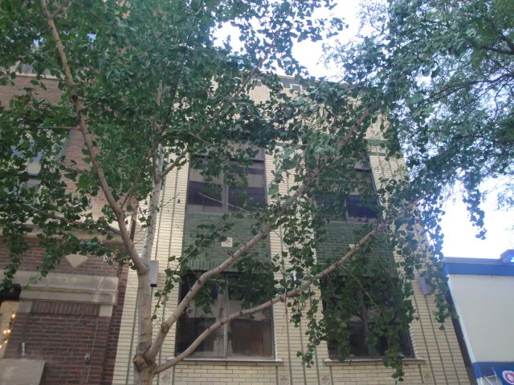
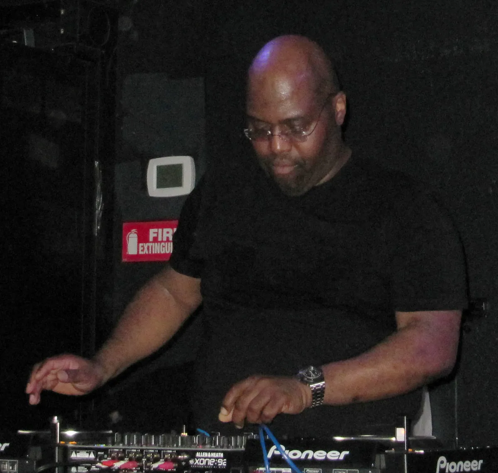
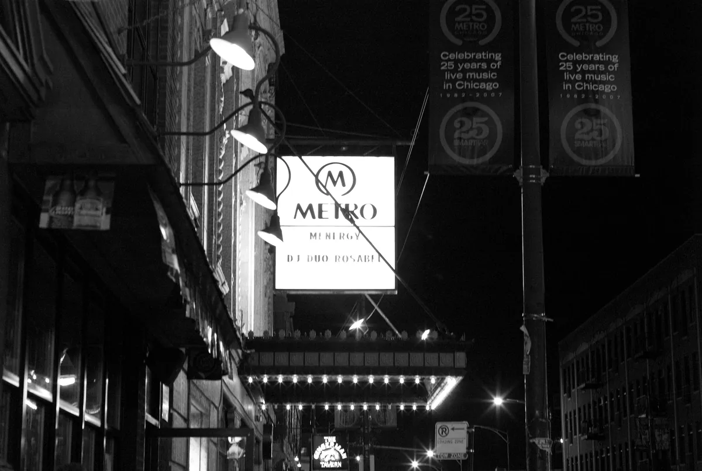
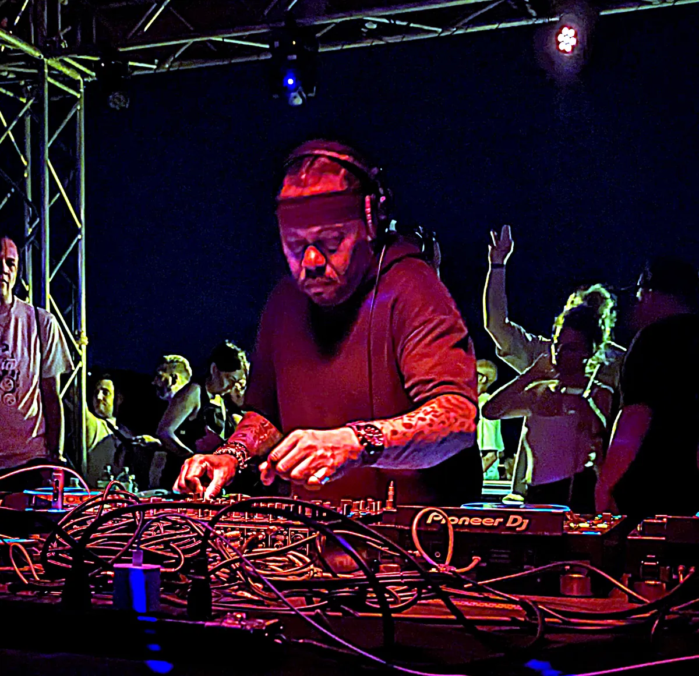
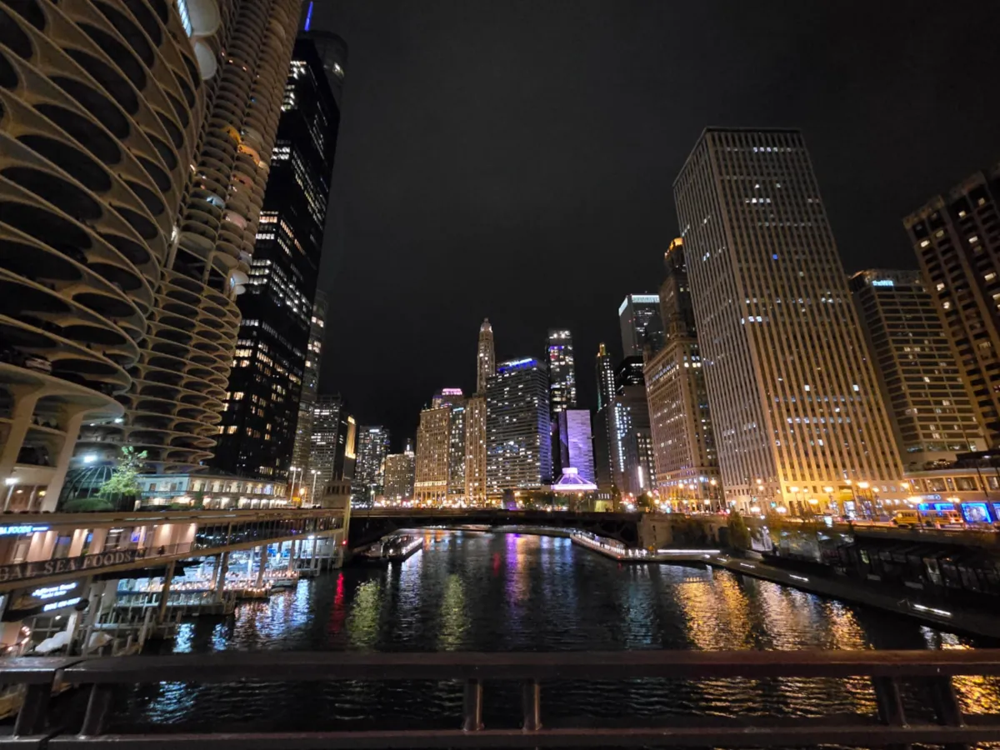
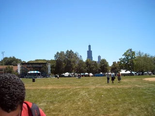

Chicago clubs
The best clubs in Chicago, from the Warehouse to Smart Bar
House music took its name from a Chicago club. The rooms that still book it properly are few, and worth knowing.
Plan your visit
Where to go out in Chicago.
Most Chicago bars close at 2am, and at 3am on Saturday night. Clubs with a late-hour licence can stay open until 4am, and until 5am on Sunday morning, so the late rooms, Smart Bar among them, are where a night ends. Check the closing time before you buy a ticket.
The nights cluster in a few areas. River North, just north of the river, has Spybar, Sound-Bar and the bottle-service clubs. Wrigleyville has Smart Bar. Pilsen has Radius, and the West Loop has the Warehouse building. Podlasie is out in Avondale, a train ride or a cab from the centre.
Clubs built around the sound.
Search for Chicago clubs or Chicago nightclubs and most of the list is bottle service: River North rooms with a table minimum, a dress code and a DJ playing the hits. This guide is about the other kind, the Chicago dance clubs where the sound system and the booking are the reason to go.
In Chicago the difference has a history, because this is where house music started. The genre took its name from a club, and the clubs that built it, the Warehouse and the Music Box, are closed. What is left is a handful of rooms that still book the music properly, a Sunday party that has run for years, and a picnic in Jackson Park that draws tens of thousands of people every July.
The Warehouse and the birth of house.
The Warehouse opened in 1977 at 206 South Jefferson Street, west of the Loop. It was run by Robert "Robbie" Williams as a members' club, with a crowd that was largely Black and largely gay, and it ran all night.

Williams hired Frankie Knuckles, a DJ from New York, as resident. The records Knuckles played there became known around the city as "Warehouse music", and that was shortened to "house".
Knuckles left in November 1982 and opened his own club, the Power Plant, which ran until 1987. He died on 31 March 2014, aged 59. The block of Jefferson Street outside the Warehouse had been named Frankie Knuckles Way on 25 August 2004, and the building was made a Chicago Landmark on 21 June 2023. It is no longer a club. For anyone who wants to see where house started, it is the first stop.

The Music Box and Ron Hardy.
When Knuckles left, the club moved and became the Music Box, later at 326 North Michigan Avenue. Its DJ was Ron Hardy, who is remembered for a rougher, louder style than Knuckles and for playing new Chicago records first.
The Music Box closed in the late 1980s. Hardy died on 2 March 1992, aged 33. Between the Warehouse, the Power Plant and the Music Box, Chicago had three rooms in the early 1980s where the records that became house were played first. The house music guide follows those records out of the city.
Smart Bar and the Metro.
Smart Bar is the oldest of the Chicago clubs still open. Joe Shanahan opened it in July 1982, and Frankie Knuckles played its opening weekend. It settled in the basement under Metro, the concert hall at 3730 North Clark Street in Wrigleyville, in a building put up in 1927 as a Swedish community centre. Metro holds 1,100, and Smart Bar holds about 400.

For forty years it has booked house and techno in a low, dark room with a good system. Derrick Carter and The Black Madonna were both residents. It stays open until 4am, and 5am on Saturdays. On Sundays it hosts Queen!, a queer house party, and some nights Metro and Smart Bar open together as one all-building party.
The best clubs in Chicago now.
Time Out's list of the best clubs in Chicago for dancing puts a Polish bar in Avondale at number one and Smart Bar at number two. Spybar, Sound-Bar and Le Nocturne follow, alongside the big River North rooms. The table keeps to the rooms that book house and techno.
| Club | Area | Music and character | Best for |
|---|---|---|---|
| Smart BarGoogle MapsResident Advisor | Wrigleyville | A 400-capacity basement under Metro, open since 1982 | House and techno, and Queen! on Sundays |
| Podlasie ClubGoogle MapsResident Advisor | Avondale | A Polish bar from 1986 with club nights since 2021 | Eclectic, local bookings in a small room |
| SpybarGoogle MapsResident Advisor | River North | A 300-capacity club, open since 1995 | Techno, house and electro |
| Sound-BarGoogle MapsResident Advisor | River North | A larger club, open since 2004 | Progressive house and techno |
| Le NocturneGoogle MapsResident Advisor | Uptown | A 25,000-watt system; Ron Carroll and Paul Johnson were residents | Chicago house |
| RadiusGoogle MapsResident Advisor | East Pilsen | A former steel factory, 5,500 across two rooms | Big touring techno and house |
| PrimaryGoogle MapsResident Advisor | Near North Side | An intimate electronic club at 5 West Division Street | House, tech house and techno |
Podlasie Club, at 2918 North Central Park Avenue, opened in 1986 as a Polish bar run by Violetta Konopka and Danuta Pluta. In 2021 it started club nights, upgraded its sound and became one of the most talked-about rooms in the city. A booking team puts on anything from italo disco to reggaeton to ambient, and the room is small enough that the crowd is part of the night.
Radius is the big room. It opened in a 55,000-square-foot former steel factory at 640 West Cermak Road, in East Pilsen, with a main hall and a second room, Cermak Hall. DJ Mag puts the total capacity at 5,500 and placed it at number 79 in its Top 100 Clubs for 2026. It is where the big touring techno and house bookings play.
Chicago house music clubs.
Smart Bar is the first answer for house. Le Nocturne in Uptown is the second: Ron Carroll and Paul Johnson, both Chicago house producers, were residents there, and it runs a 25,000-watt system. Sound-Bar in River North, open since 2004, leans toward progressive house and techno.

Derrick Carter's sets are a good way to hear what Chicago house sounds like in a club. He was a Smart Bar resident; this set was recorded for Boiler Room in São Paulo.
The biggest house event in the city is not a club at all. The Chosen Few Picnic has been held in Jackson Park on the South Side since 1990, on the Saturday after Independence Day, and draws around 40,000 people. It is run by the Chosen Few DJs, who played the city's early house parties, and it is a picnic first: families, food and several generations dancing to the same records. The 36th edition was on 11 July 2026.
Chicago techno clubs and EDM rooms.
The Chicago techno clubs that matter are few. Spybar, open since 1995 in River North, is the steady one: a 300-capacity room for techno, house and electro. Radius takes the touring headliners, and Smart Bar books techno alongside its house nights.
For Chicago EDM clubs, Prysm is the big room to know. Time Out lists it among the best dance clubs in Chicago, and it books international techno too: Drumcode has recorded live sets there.
Hear Chicago before you go.

For a festival, ARC Music Festival brings house and techno to Union Park over Labor Day weekend. For another city, the NYC clubs guide covers New York, where Frankie Knuckles started out.
Chicago clubs FAQ.
What are the best clubs in Chicago?
For house and techno, Smart Bar, Podlasie Club, Spybar, Sound-Bar, Le Nocturne and Radius. Smart Bar is the oldest and the best known; Radius is the biggest.
What is the most famous club in Chicago?
The Warehouse, at 206 South Jefferson Street, where Frankie Knuckles played from 1977 to 1982. House music is named after it. It closed long ago, but the building is now a Chicago Landmark. Of the clubs still open, Smart Bar, since 1982, is the most famous.
What is the hottest club in Chicago?
Podlasie Club in Avondale, a Polish bar that started club nights in 2021. Time Out called it the hottest nightclub in Chicago and puts it first on its list of the best clubs in the city.
What is the biggest club in Chicago?
Radius in Pilsen, a former steel factory on West Cermak Road. DJ Mag gives its total capacity as 5,500 across the main hall and Cermak Hall.
What are the best nightclubs in Chicago for house music?
Smart Bar under the Metro, Le Nocturne in Uptown and Sound-Bar in River North. In summer, the Chosen Few Picnic in Jackson Park is the biggest house event in the city.
What time do clubs close in Chicago?
Ordinary bars close at 2am, or 3am on Saturday night. Clubs with a late-hour licence can stay open until 4am, and 5am on Sunday morning.
Where did house music start?
In Chicago, at the Warehouse, where Frankie Knuckles was resident from 1977. Record shops called the records he played "Warehouse music", and the name was shortened to house.
Sources.
- Wikipedia: The Warehouse (Chicago)
- Wikipedia: Frankie Knuckles
- Wikipedia: Ron Hardy
- Wikipedia: Metro Chicago and Smart Bar
- Time Out: The best nightclubs and dance clubs in Chicago (2025)
- Time Out: The hottest nightclub in Chicago is hiding in a Polish dive bar
- 6AM: 40 best house and techno clubs in North America
- DJ Mag Top 100 Clubs 2026: Radius
- Choose Chicago: where to hear house music in Chicago
- City of Chicago: liquor licence information
Continue reading
Read next.

Festivals~7 min readARC Music Festival 2027: Chicago Guide, Stages and Travel
Chicago house history, international techno, the compact Union Park site and the city-wide After Dark programme.
Read article → Rave spots~8 min read
Rave spots~8 min readBerghain: Panorama Bar, Sound and Residents
Berghain explained: the former power station, Panorama Bar upstairs, Halle am Berghain, the Kantine, and the Ostgut Ton label.
Read article → Rave spots~8 min read
Rave spots~8 min readBest Clubs in Los Angeles: Nightclubs for House and Techno
Avalon Hollywood, Exchange LA, Academy LA, Sound, Lot 613 and Catch One: the best clubs in Los Angeles for house and techno.
Read article → Rave spots~11 min read
Rave spots~11 min readBest Clubs in NYC: Nightclubs for House and Techno
Nowadays, Basement, Public Records, Good Room and Elsewhere: the best clubs in NYC for house and techno now, and the history from the Loft to Output.
Read article →Want something to play while you read? Let the Selector pick a DJ set.